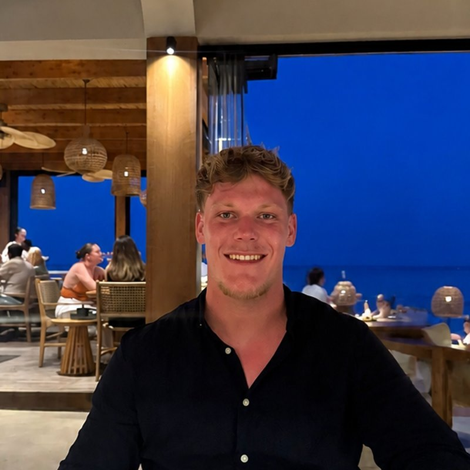
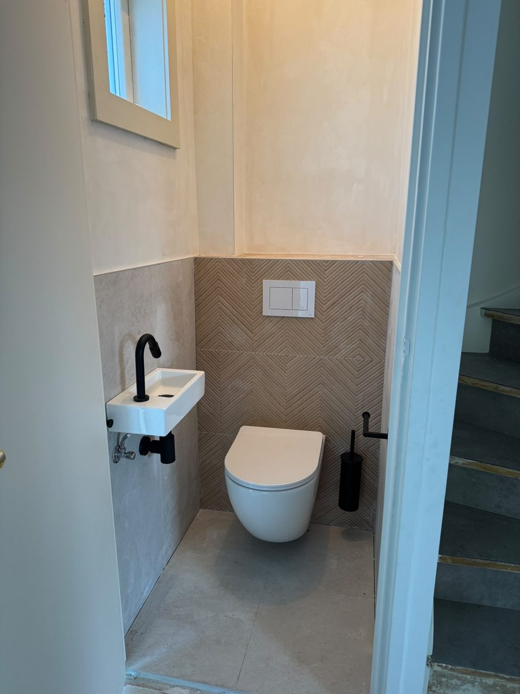
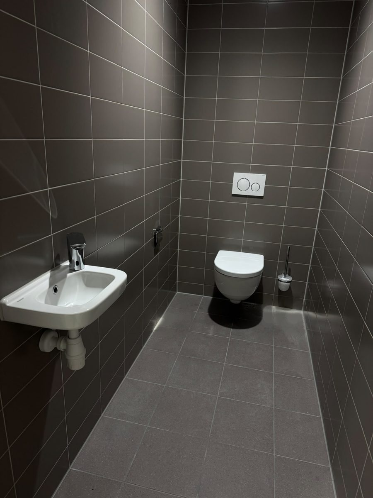
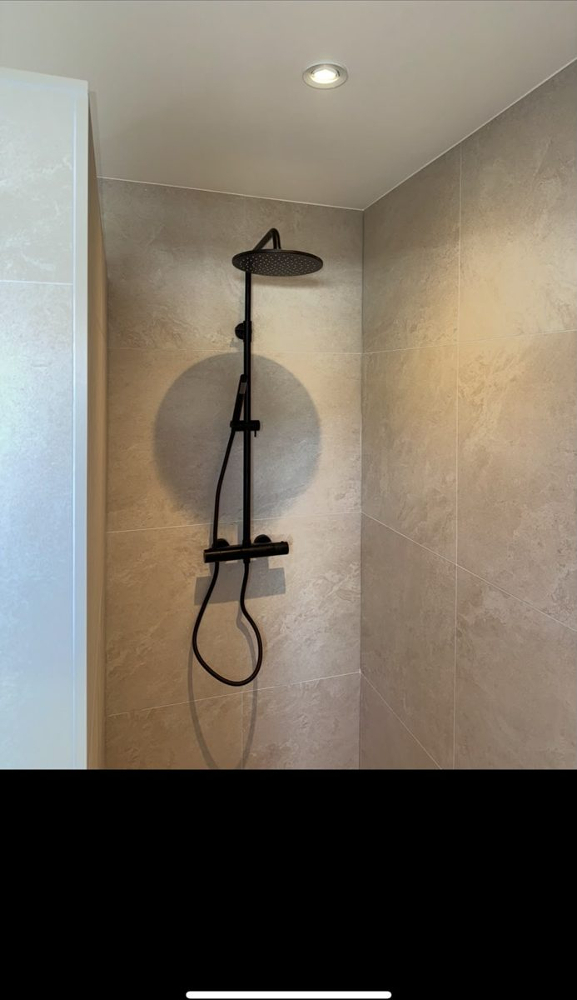
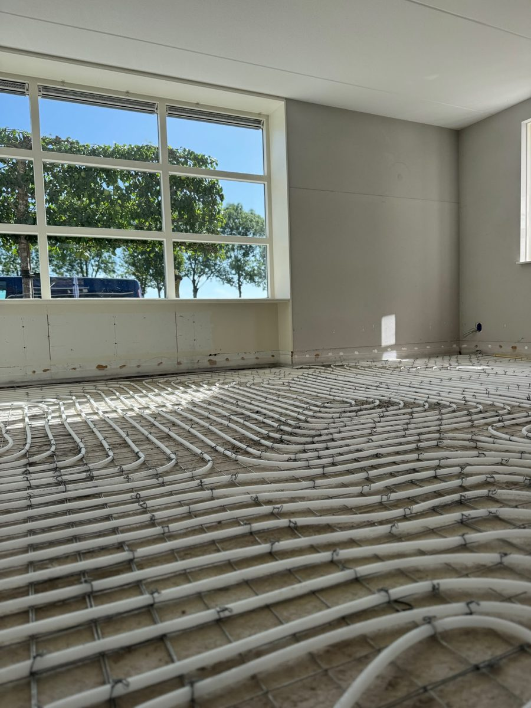
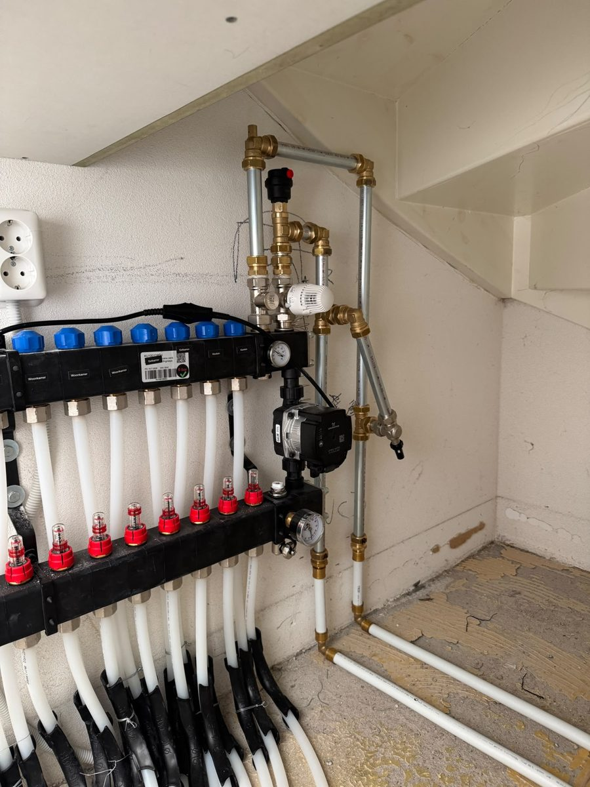
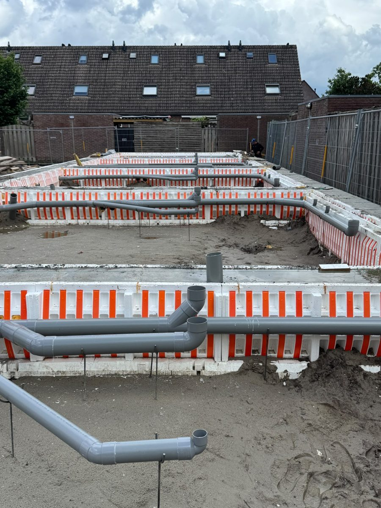
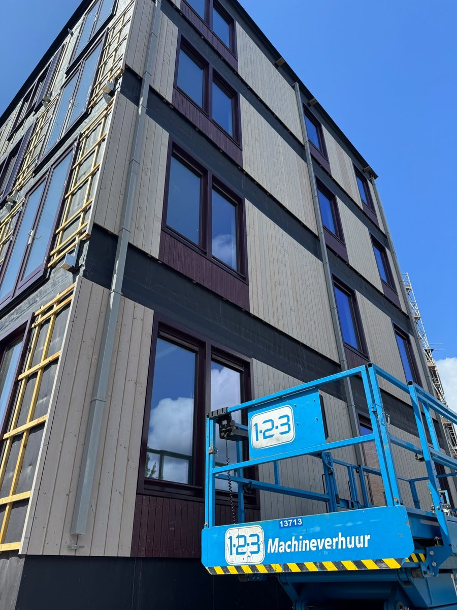

Lekkages en leidingwerk
Lekkende kraan, kapotte leiding of een nieuwe aansluiting. Opsporen en repareren zonder onnodig breekwerk.

Benjamin · neemt zelf opEén vakman die zelf opneemt, langskomt en het werk doet. Lekkages, riool, verwarming, badkamer en toilet. Door heel Nederland.
Maak kennis
BJL Allround is Benjamin. Geen callcenter, maar één vakman die zelf opneemt, langskomt en het werk doet. Eerlijk advies: repareren als het kan, vervangen als het moet.
Naast elkaar
| Waar het om gaat | BJL Allround | Groot installatiebedrijf |
|---|---|---|
| Wie neemt op | Benjamin zelf | Callcenter of planner |
| Wie komt langs | Dezelfde vakman | Wisselende monteur |
| Prijs | Vooraf bekend | Vaak pas achteraf |
| Bij spoed | Zelfde dag | Op de planning |
| Foto via WhatsApp | Vaak direct een inschatting | Meestal niet |
| Aanspreekpunt | Eén persoon | Een afdeling |
Bij BJL Allround heb je één aanspreekpunt van het eerste telefoontje tot de factuur. Geen wachtrij, geen doorverbinden, en je weet vooraf waar je aan toe bent.
Bel BenjaminDan was jij er wel snel bij en snel gefixed 👍🏻💪🏻na de klus
Super gedaan Benjamin! Bedankt goed weekend!na de klus
Ziet er goed uit man!na de klus
Fijn dat je het zo oppakt 👍na de klus
Dat je je best doet, zie ik wel 😉💪🏻 Dus komt goedna de klus
Diensten
Van een lekkende kraan tot een complete badkamer.
Lekkende kraan, kapotte leiding of een nieuwe aansluiting. Opsporen en repareren zonder onnodig breekwerk.
Elektrische boilers en warmwatervoorzieningen. Radiatoren plaatsen, vervangen en ontluchten, en vloerverwarming inclusief verdeler.
Toilet, afvoer of riool verstopt? Snel ontstoppen, camera-inspectie en lekdetectie. Ook riool en putten aanleggen, herstellen of vervangen.
Van een nieuw toilet tot een complete badkamer: leidingwerk, sanitair en strakke afwerking.
Dakgoten, hemelwaterafvoer en zinkwerk monteren of herstellen, ook op hoogte.
Gasleidingen, buitenkraan, wasmachine- en vaatwasseraansluiting.
Recent werk
Eigen foto's van eigen werk, met uitleg per klus.







01 / 09
Zwart zwevend badmeubel met dubbele zwarte kraan en een ronde, verlichte spiegel op visgraattegels.
Wandcloset op inbouwreservoir, fonteintje met zwarte kraan en sifon, visgraattegels als accentwand. Al het leidingwerk zit weggewerkt in de wand.
Strak betegeld toilet in grijs: wandcloset met bedieningsplaat en fonteintje met chromen kraan. Geen zichtbare leidingen, makkelijk schoon te houden.
Regendouche met thermostaatkraan en handdouche in mat zwart op grootformaat tegels. De leidingen lopen in de wand, dus geen buizen in het zicht.
Antracieten achterwand en vloer, wandcloset en fonteintje met messing kraan. Inbouwreservoir en afvoer volledig weggewerkt.
Gelegd op wapeningsnet, klaar voor de dekvloer. Gelijkmatige lussen met vaste afstand geven een egale warmte over de hele vloer.
Verdeler met pompgroep en per groep een flowmeter, aangesloten op de cv-leidingen en netjes weggewerkt onder de trap. Elke groep is apart in te regelen.
Op afschot gelegd en gefixeerd voordat de vloer gestort wordt, zodat alles later goed blijft afvoeren.
Gemonteerd op de houten gevel van een appartementengebouw, met beugels, vanaf de hoogwerker en strak in lijn met de gevel.
Zo werkt het
Eén telefoontje of appje en het loopt.
Met een foto weet Benjamin vaak al wat er nodig is.
Vast tarief of een gratis offerte, vooraf.
Benjamin komt zelf en doet het werk.
Garantie op het werk, schoon achtergelaten.
Vragen
Bij spoed proberen we dezelfde dag langs te komen. Bel direct, dan hoor je meteen hoe laat we er kunnen zijn. Zet bij een lekkage eerst de hoofdkraan dicht.
Dat hangt af van de klus. Voor kleine reparaties rekenen we een vast tarief, voor grotere klussen maak je vooraf een offerte. Je weet altijd de prijs voordat we beginnen.
Door heel Nederland. Benjamin zit in Overijssel; buiten Overijssel rekenen we reiskosten, en die hoor je vooraf.
Zeker. We doen zowel losse klussen voor bedrijfspanden als voor verhuurders.
Ja, op de uitgevoerde werkzaamheden en op de geplaatste materialen/onderdelen volgens de geldende fabrieksgarantie. De precieze garantietermijn staat in de offerte of op de factuur.
Na afronding ontvang je een factuur die je per bankoverschrijving of betaalverzoek kunt voldoen. Bij grotere klussen spreken we vooraf de termijnen af.
Bel, app of mail Benjamin. Bij spoed komt hij dezelfde dag, anders hoor je binnen één werkdag wanneer het kan.
06-41178935bjlzakelijk@gmail.com